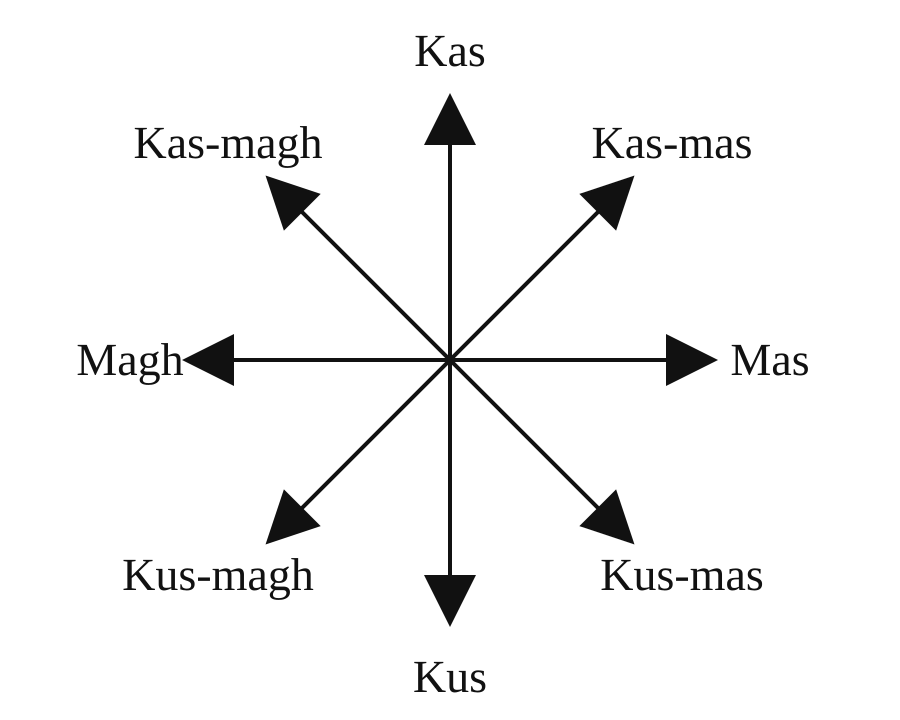

(c)
chora mstari mwingine ulionyooka katikati ya upande wa Kusini na upande wa Mashariki, ukianzia pale mistari ya pande hizo ilipokutana, kisha weka alama ya Kusini-Mashariki (Kus-Mas);
(d)
chora mstari mwingine ulionyooka katikati ya upande wa Kusini na upande wa Magharibi, ukianzia pale mistari ya pande hizo ilipokutana kisha weka alama ya Kusini-Magharibi (Kus-Magh); na
(e)
chora mstari mwingine ulionyooka katikati ya upande wa Kaskazini na upande wa Magharibi, ukianzia pale mistari ya pande hizo ilipokutana, kisha weka alama ya Kaskazini-Magharibi (Kas-Magh).
Baada ya kuunda mchoro wako, bila shaka umepata pande nane za dunia.
Zingatia: Unaposoma au unapowasilisha pande nane za dunia, unapaswa kuanzia upande wa Kaskazini au Kusini. Hii ni kwa sababu pande hizi ni alama za msingi katika dira zinazotumika katika uelekezaji. Pia, alama hizi ndio msingi wa kukuongoza kutambua pande nane za dunia, kama inavyowasilishwa katika Kielelezo namba 5.
